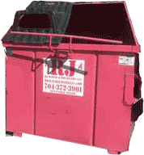
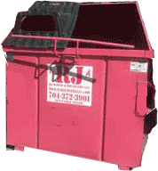

january 19th, 2020 [home]
i'm thinking about how...
february 11th, 2019 [home]
i got sad laying in your bed and started crying because i still don't know how to be or what i get to share with you. i felt guilty being there and i often feel guilt about how much i care about you.
january 15th, 2018 [the nest]
did i meet someone? it feels to unfamiliar to be acceptable. i don't know how to process feeling happy...
 
